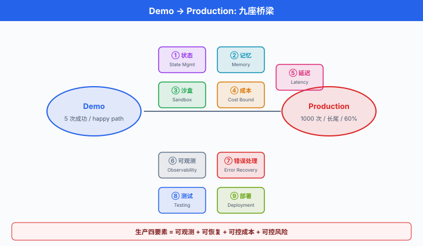
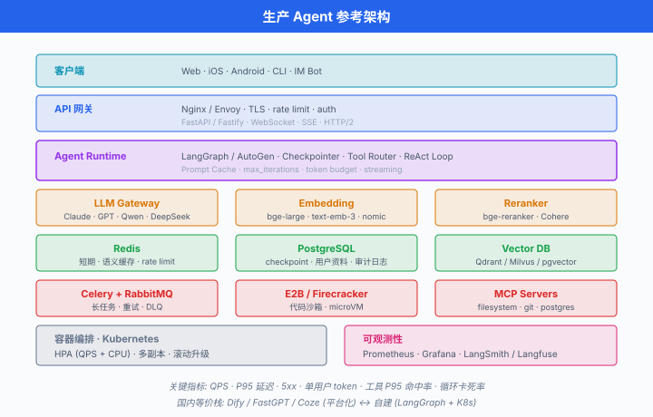

Agent 生产落地¶
一句话总结：从 demo 到 production 隔着一条深渊，越过它靠的不是更大的模型，而是状态管理 / Memory / 沙盒 / 成本控制 / 可观测性 / 错误恢复 / 测试评估这套完整的工程栈。
前五节讲了 Agent 的原理、ReAct 循环、工具接入、MCP 标准化、多 Agent 编排。 这些放到 Jupyter Notebook 里跑，demo 效果通常都不错 —— 一杯咖啡，5 次都成功。 但你把它上线，让 1000 个真实用户去用，事情就完全不同了：有人的问题连续调 30 轮工具超预算；有人一个越狱 prompt 让 Agent 把 .env 泄漏；有人的对话跨了三天需要恢复上下文；有人的 tool call 因外部 API 抖动失败但重试造成了重复下单。 Demo 只需要"能跑"，生产要"能扛" —— 可观测、可恢复、可控成本、可控风险。 这一节就是那本"从 demo 到 production"的求生手册，全是坑与实操，中国生态 (Dify / FastGPT / Coze) 一并覆盖.
从 Demo 到 Production 的深渊¶
一个真实的观察：同一个 Agent，内部演示 5 次成功率 100%，上生产跑 1000 次，成功率掉到 60%. 为什么?
Demo 与 Production 的差距不在算法，在长尾:
- Demo 的输入是精心设计的 happy path; Production 的输入包含 emoji 满屏、代码片段、prompt injection、10 种语言混杂、乱码。
- Demo 的外部 API 从没挂过；Production 里 OpenAI 429、Bing Search 503、内网数据库慢查询，每天都有。
- Demo 的对话跑 5 轮就结束；Production 有用户跑 200 轮，上下文早就爆了。
- Demo 崩了直接重启；Production 用户对话到第 8 轮崩了，你得从第 8 轮恢复，不能让他重问一遍。
- Demo 不看账单；Production 一天 10 万次调用，一个循环 bug 一天烧掉 5000 美元。
生产 Agent 的四个硬要求:
- 可观测 (observable)：每一步在哪、耗时多少、花了多少 token，全都有 trace.
- 可恢复 (recoverable)：崩了从 checkpoint 续跑，用户无感。
- 可控成本 (cost-bounded)：单次会话 / 单用户 / 单天有硬上限，超了报警。
- 可控风险 (risk-bounded)：破坏性动作有 human-in-the-loop，沙盒隔离，权限最小化，审计日志。
后面每一小节，都是把这四个要求拆开来讲清楚"怎么做".

状态管理：Ephemeral vs Persistent¶
状态管理 (state management) 是生产 Agent 的第一根支柱。 状态分三层:
- Ephemeral state (瞬时状态)：当前请求生命周期内的东西，进程死了就丢，例如 ReAct 循环里当前的 scratchpad.
- Persistent state (持久状态)：存到数据库的 checkpoint，服务重启后能恢复。 LangGraph 的 SqliteSaver / PostgresSaver 就干这个。
- Long-term memory (长期记忆)：跨会话的知识，通常存到向量数据库 (vector database, vector DB) 或知识图谱 (Knowledge Graph, KG).
第一次上生产的团队最常犯的错：把所有状态放内存。 服务一重启，用户对话全丢。 正确的做法是每一步 tool call 完成后落盘一次，让 workflow 天然可恢复。
LangGraph Checkpointing 实操¶
# pip install langgraph langgraph-checkpoint-sqlite
import sqlite3
from langgraph.graph import StateGraph, END
from langgraph.checkpoint.sqlite import SqliteSaver
from typing import TypedDict
class ChatState(TypedDict):
messages: list
step: int
def call_llm(state: ChatState) -> dict:
# 简化: 真实场景这里会调 LLM + 工具
return {"messages": state["messages"] + [f"reply-{state['step']}"],
"step": state["step"] + 1}
def should_continue(state: ChatState) -> str:
return "loop" if state["step"] < 5 else "end"
graph = StateGraph(ChatState)
graph.add_node("agent", call_llm)
graph.set_entry_point("agent")
graph.add_conditional_edges("agent", should_continue, {"loop": "agent", "end": END})
# 关键: 用 SQLite 持久化, 每一步自动写盘
conn = sqlite3.connect("agent_checkpoints.db", check_same_thread=False)
checkpointer = SqliteSaver(conn)
app = graph.compile(checkpointer=checkpointer)
# 用户 A 的会话, thread_id 就是他的 session_id
config = {"configurable": {"thread_id": "user-a-session-42"}}
# 第一次调用: 跑到第 3 步时假设进程崩了
try:
result = app.invoke({"messages": [], "step": 0}, config=config)
except KeyboardInterrupt:
pass
# 服务重启后, 传同一个 thread_id, 从 checkpoint 恢复
# LangGraph 自动读取最新 checkpoint, 从上次断点继续
result = app.invoke(None, config=config) # None = 用已有 state
print(result)
要点:
thread_id是恢复的关键标识，通常等于用户 session ID.- Checkpoint 频率是每个 node 完成后一次，粒度足够细。
- 生产用
PostgresSaver, SQLite 只适合单机 demo.
Memory 架构：短期 / 长期 / 反思¶
单纯的 checkpoint 只解决"当前对话不丢"，没解决"跨会话记住用户". 完整的 Agent memory 架构分三层:
- 短期记忆 (Short-term memory)：当前 context window 里的 system + user + assistant 消息。 生命周期 = 一次对话。
- 长期记忆 (Long-term memory)：跨会话保存，又细分为三种:
- 语义记忆 (Semantic memory)：事实。 "用户是糖尿病患者". 存向量 DB 或 KG.
- 情景记忆 (Episodic memory)：时间点上发生的事件。 "2026-07-25 用户预约了口腔科". 存时序数据库或加时间戳的向量 DB.
- 程序记忆 (Procedural memory)：会做什么，不写 prompt 里 —— 已经微调进模型权重. 例如用户 Agent 的说话风格被 fine-tune 进 LoRA 权重。
- 工作记忆 (Working memory)：短期 + 当前从长期检索来的相关片段，拼起来送给 LLM 的最终 prompt.
反思 (Reflection) 机制由 Park 等 (2023) 的 Generative Agents 提出：Agent 定期把最近的一批 observation 用 LLM 总结成更高层的 "insight"，存回长期记忆。 这样长期记忆不是 raw log，而是分层压缩的知识。
数学上，记忆检索的相关度打分通常混合三个因素：语义相似度 \(s_i\)、时效衰减 \(e^{-\lambda \Delta t_i}\)、重要性 \(w_i\):
其中 \(\Delta t_i\) 是记忆的年龄 (小时), \(\lambda\) 是遗忘率。 Park 等给的经验值：\(\alpha = \beta = \gamma = 1\)；原文对时效项直接采用 \(0.99^{\Delta t}\) (每小时衰减到上一小时的 99%)，换算到 \(e^{-\lambda \Delta t}\) 形式即 \(\lambda \approx 0.01\). 落地时按具体业务调。
实用建议:
- 起手别搞得太复杂。 90% 场景，短期 (对话历史) + 语义长期 (向量 DB 存事实) 就够。
- Reflection 只在真需要长跑的 Agent (陪伴机器人、虚拟角色) 才上。 普通客服 Agent 不需要。
- 长期记忆写入前LLM 抽取事实，别把整段对话原样存。 存的是 "用户对海鲜过敏"，不是 "用户说他上次吃虾之后..."
Tool Safety：沙盒 + 权限 + 审计¶
Agent 能调工具是它的力量，也是它的危险。 生产环境的三道防线:
沙盒 (sandbox) 隔离. 当 Agent 需要执行代码 / shell / 文件操作时，一律在沙盒里跑，别在生产机器上跑:
- E2B (2024 起流行)：云上 Firecracker microVM，秒级启动，SDK 一行调用。
- Modal：云函数，天生隔离，适合长任务。
- Firecracker (AWS 开源)：自己搭沙盒集群的底层。
- Docker + gVisor：便宜方案，但启动慢，逃逸风险高于 microVM.
# pip install e2b-code-interpreter
from e2b_code_interpreter import Sandbox
def run_code_tool(code: str) -> dict:
"""给 Agent 用的代码执行工具: 隔离在 E2B 沙盒里"""
with Sandbox(timeout=30) as sbx: # 30 秒超时, 到时强杀
execution = sbx.run_code(code)
return {
"stdout": execution.logs.stdout,
"stderr": execution.logs.stderr,
"error": str(execution.error) if execution.error else None,
"results": [r.text for r in execution.results if r.text],
}
# 集成到 Agent 的 tool schema
tool_schema = {
"type": "function",
"function": {
"name": "run_python",
"description": "在隔离沙盒里执行 Python 代码, 30 秒超时",
"parameters": {
"type": "object",
"properties": {"code": {"type": "string"}},
"required": ["code"],
},
},
}
# 使用示例
result = run_code_tool("import pandas as pd; print(pd.__version__)")
print(result["stdout"])
Human-in-the-loop (人类介入). 破坏性动作 —— 发邮件、下单、写数据库、删文件 —— 必须停下等人类确认。 LangGraph 的 interrupt 原语就是干这个:
from langgraph.types import interrupt, Command
def send_email_node(state):
# 关键动作前挂起, 等人类审批
approval = interrupt({
"action": "send_email",
"to": state["recipient"],
"subject": state["subject"],
"body": state["body"],
})
if approval == "approve":
send_actual_email(state)
return {"status": "sent"}
return {"status": "cancelled"}
# 前端拿到 interrupt payload 后展示给用户, 用户点"批准", 后端调:
app.invoke(Command(resume="approve"), config={"configurable": {"thread_id": "..."}})
权限模型 (per-tool allow-list). 不是每个 Agent 都该拿到全部工具。 给每个 Agent 显式声明白名单:
AGENT_TOOL_PERMISSIONS = {
"customer-support": ["search_kb", "read_order", "escalate_to_human"],
"sales-assistant": ["search_kb", "read_order", "read_pricing"],
"internal-admin": ["*"], # 只有可信内部 Agent 拿全权
}
def get_tools_for(agent_id: str, all_tools: dict) -> dict:
perms = AGENT_TOOL_PERMISSIONS[agent_id]
if "*" in perms:
return all_tools
return {name: fn for name, fn in all_tools.items() if name in perms}
审计日志 (audit log). 每次 tool call 落一条不可篡改的记录：(timestamp, agent_id, user_id, tool_name, params_hash, result_hash). 出事时能回溯到"谁在什么时候让哪个 Agent 调了什么工具".
Cost Control：让账单可预测¶
Agent 是 token 的大户。 一个粗略的成本公式:
其中:
- \(N_\text{turns}\)：单用户平均轮数。
- \(T_\text{ctx}\)：平均输入上下文 token 数 (含系统 prompt + 历史 + 工具描述).
- \(T_\text{out}\)：平均输出 token 数。
- \(p_\text{in}, p_\text{out}, p_\text{cache}\)：输入 / 输出 / 缓存读取的单价。
- \(r_\text{cache} \in [0, 1]\): prompt 缓存命中率。
Anthropic 2024 的 Prompt caching 把 \(r_\text{cache}\) 的价值放大到极致：命中部分收 0.1× 输入价 (Claude Sonnet 4), 90% 折扣。 长系统提示 + 工具描述 + few-shot 例子 (通常占输入的 80% 以上，但每次调用一样)，全塞进缓存，命中一次的成本降到几乎为零。
Prompt caching 实操 (Anthropic API):
# pip install anthropic
from anthropic import Anthropic
client = Anthropic()
SYSTEM_PROMPT = """
你是资深客服 Agent, 遵循以下规则:
1. 只用中文回答
2. 涉及退款超过 500 元必须转人工
3. ... (以下为 5000 字详细规则 + 工具描述 + 20 条 few-shot 示例)
""" # 假设整段 15K token
def chat_with_cache(user_msg: str, history: list[dict]) -> str:
resp = client.messages.create(
model="claude-sonnet-4-5-20250929",
max_tokens=1024,
system=[
{
"type": "text",
"text": SYSTEM_PROMPT,
# 关键: cache_control 标记这一段可缓存, TTL 默认 5 分钟, 可用 "1h" 延长
"cache_control": {"type": "ephemeral"},
}
],
messages=history + [{"role": "user", "content": user_msg}],
)
# 从响应元数据看命中情况
usage = resp.usage
print(f"cache_creation_input_tokens: {usage.cache_creation_input_tokens}")
print(f"cache_read_input_tokens: {usage.cache_read_input_tokens}")
return resp.content[0].text
第一次调用是 cache_creation，按 1.25× 输入价；之后 5 分钟内 (延长到 1 小时可在 cache_control 块中加 "ttl": "1h" 字段)，全部走 cache_read, 0.1× 输入价。 一个 15K token 的系统 prompt, 1000 次调用节省的钱能覆盖一个月的服务器成本。
其他成本手段:
- 短路 (early stop)：达成目标就立即结束，别让 Agent "客气一句" 多花一轮。
- 小模型粗筛 + 大模型终判：简单意图分类用
gpt-4o-mini/claude-haiku，复杂推理才上gpt-4o/claude-sonnet. 一个开源实践：Semantic Router 库。 - Max iterations 上限:
max_iterations=10，到 10 强制停，让降级路径处理。 - 上下文摘要：超过 20 轮的对话，用 LLM 把前 15 轮总结成 200 token，后 5 轮保留原文。
Latency 优化¶
用户能忍多久？客服场景首字延迟 (Time To First Token, TTFT) > 3 秒就掉转化。 优化四板斧:
Streaming. 别等模型说完再返回，用 SSE 或 WebSocket 一 token 一 token 推。 stream=True 一行事。
Parallel tool calls. OpenAI 从 2024 开始支持一次响应里返回多个 tool_call，让 Agent 同时调 3 个 API 而不是串行:
# Agent 一次输出 3 个 tool_call, 并行执行
import asyncio
async def dispatch_tools(tool_calls):
tasks = [execute_tool(tc) for tc in tool_calls]
return await asyncio.gather(*tasks) # 并发, 总耗时 = max(单个耗时)
3 个独立的 API 调用，串行 300 ms × 3 = 900 ms，并行 300 ms. 收益立竿见影。
Speculative execution (推测执行). 猜下一步 Agent 会调哪个工具，提前发起。 若猜对省一轮延迟，猜错扔掉。 适合工具集小且分布明显的场景。
语义缓存 (semantic cache). 用户问 "怎么退款"，上周有人问过 "如何申请退货", embedding 相似度 0.92，直接返回缓存的答案:
# 用 Redis + embedding 做语义缓存
from openai import OpenAI
import redis, json, numpy as np
client = OpenAI()
r = redis.Redis(decode_responses=True)
def embed(text: str) -> list[float]:
return client.embeddings.create(
model="text-embedding-3-small", input=text
).data[0].embedding
def cache_lookup(query: str, threshold: float = 0.9) -> str | None:
q_vec = np.array(embed(query))
# 简化: 遍历所有缓存 key. 生产用 Redis Vector Search / Qdrant / Milvus
for key in r.scan_iter("cache:*"):
entry = json.loads(r.get(key))
c_vec = np.array(entry["embedding"])
sim = q_vec @ c_vec / (np.linalg.norm(q_vec) * np.linalg.norm(c_vec))
if sim > threshold:
return entry["answer"]
return None
def cache_store(query: str, answer: str, ttl: int = 3600):
r.setex(
f"cache:{hash(query)}", ttl,
json.dumps({"embedding": embed(query), "answer": answer}),
)
命中率 20-40% 的 FAQ 型 Agent，语义缓存直接把 P50 延迟从 1.5 秒降到 30 ms.
Observability：你看不见的东西治不了¶
可观测性 (observability) 是生产 Agent 与 demo Agent 最本质的差别。 Trace 一整条对话链 (每次工具调用是一个 span)，关键指标:
- 每步耗时 (LLM call / tool call): P50, P95, P99.
- 工具成功率 (per-tool)：低于 95% 的工具马上查。
- Token 消耗 (per-user, per-day, per-session).
- 错误分布 (超时 / 429 / 5xx / 工具失败 / LLM refuse).
- 对话轮数分布：长尾用户是不是陷入循环?
生态选型 (2026 年):
- LangSmith (LangChain 官方，收费)：与 LangChain / LangGraph 无缝，trace UI 精美，支持数据集回放。
- Langfuse (开源自托管)：数据不出内网，国内合规友好，中文文档不错。
- Helicone：代理模式，一行改 base_url 即可接入，语言无关。
- Arize AI / Phoenix：更偏 ML 指标，支持数据漂移检测。
- 国内：阿里 ARMS-Prompt / 火山引擎 APMPlus 都开始上 LLM trace 能力。
LangSmith 集成¶
# pip install langsmith
import os
os.environ["LANGSMITH_TRACING"] = "true"
os.environ["LANGSMITH_API_KEY"] = "lsv2_..."
os.environ["LANGSMITH_PROJECT"] = "prod-customer-support"
from langsmith import traceable
from openai import OpenAI
client = OpenAI()
@traceable(name="search_kb", run_type="tool")
def search_kb(query: str) -> list[dict]:
# 你的知识库检索
return [{"id": "kb-42", "title": "退款流程", "score": 0.87}]
@traceable(name="chat_turn", run_type="chain")
def chat_turn(user_msg: str, history: list[dict]) -> str:
docs = search_kb(user_msg) # 自动成为子 span
resp = client.chat.completions.create(
model="gpt-4o",
messages=history + [{"role": "user", "content": user_msg}],
)
return resp.choices[0].message.content
# 调用一次, LangSmith Dashboard 立刻看到:
# chat_turn (350 ms)
# ├── search_kb (12 ms)
# └── openai.chat.completions.create (338 ms, 1240 in tokens, 89 out tokens, $0.0031)
answer = chat_turn("如何退款", history=[])
生产 checklist:
- 每个用户对话有唯一
session_id，全链路透传。 - 每个 tool call 记
(input, output, latency, error). - 每周跑一次 trace 采样人工评估 (10 条 / 周，覆盖低满意度 case).
Error Handling：假设一切都会挂¶
生产环境，每一个外部依赖都会挂。 处理原则:
Retry with exponential backoff (指数退避重试). OpenAI 429 是常态，别拿到就崩:
import time, random
from functools import wraps
def retry_with_backoff(max_retries=3, base_delay=1.0, max_delay=30.0,
retryable=(TimeoutError, ConnectionError)):
def decorator(fn):
@wraps(fn)
def wrapper(*args, **kwargs):
for attempt in range(max_retries):
try:
return fn(*args, **kwargs)
except retryable as e:
if attempt == max_retries - 1:
raise
# 指数退避 + jitter, 避免多个 client 同步重试打爆下游
delay = min(base_delay * (2 ** attempt), max_delay)
delay = delay * (0.5 + random.random()) # jitter
time.sleep(delay)
return None
return wrapper
return decorator
@retry_with_backoff(max_retries=4, base_delay=0.5)
def call_external_api(payload: dict) -> dict:
# 有几率 raise TimeoutError
...
指数退避后的期望总延迟 \(E[T]\):
其中 \(K\) 是最大重试次数，\(d\) 是基础延迟，\(P(\text{success})\) 是每次调用独立成功率。 例如 \(K = 4, d = 0.5, P = 0.9\), \(E[T] \approx 0.94\) 秒 —— 用户几乎无感。
Fallback tools (降级工具). 主 API 挂了走备份：主 search_google，备 search_bing，再备 search_local_kb. LangChain 有 RunnableWithFallbacks, LangGraph 用 conditional edge.
断路器 (circuit breaker). 一个外部服务连续失败 5 次，30 秒内直接短路返回，不再尝试，免得雪崩。 Python 用 pybreaker:
import pybreaker
breaker = pybreaker.CircuitBreaker(fail_max=5, reset_timeout=30)
@breaker
def flaky_api_call(x):
...
Graceful degradation (优雅降级). 检索工具挂了，Agent 应该说 "抱歉当前查不到实时数据，根据我了解..."，而不是抛异常给用户。 系统提示里显式指导 fallback 行为。
LLM refusal / hallucination fallback. LLM 说 "我不能帮你办这个" 或胡编工具名，都要 catch. 常规做法：输出结构化 JSON, pydantic 校验，校验失败重试或转人工。
Testing & Eval：回归 + A/B + LLM-as-judge¶
这块与 Ch22/07 Agent Eval 呼应，生产落地视角补充三件事:
回归套件 (regression suite). 每次改 prompt 前，跑一遍固定的 100 条测试用例，卡阈值。 用例覆盖:
- 已知会踩坑的 case (历史 bug).
- 每类典型意图 5-10 条。
- 边界 case (超长输入，空输入，多语言，越狱).
A/B 测试. 上新 prompt 时，分流 10% 流量，一周后看核心指标 (满意度、CSAT、解决率) 有无显著差异，再决定全量。
LLM-as-judge. 客服场景无法用 exact-match 打分，用 GPT-4o 当裁判:
JUDGE_PROMPT = """
你是客服质量评审员. 用户的问题是: {question}
Agent 的回答是: {answer}
参考答案 (若有): {reference}
请从三个维度打分 (1-5), 输出 JSON:
- correctness: 事实正确性
- helpfulness: 是否真的解决了用户问题
- tone: 语气是否符合客服规范
返回格式: {{"correctness": int, "helpfulness": int, "tone": int, "reason": str}}
"""
def judge(question, answer, reference=""):
resp = client.chat.completions.create(
model="gpt-4o",
messages=[{"role": "user",
"content": JUDGE_PROMPT.format(**locals())}],
response_format={"type": "json_object"},
)
return json.loads(resp.choices[0].message.content)
Judge 本身也要 eval —— 每月和人工标注对比一次，相关系数 < 0.7 就要换 prompt 或换更强的 judge 模型。
部署架构参考¶
典型的生产 Agent 服务栈:
- API 层: FastAPI / Fastify，处理 HTTP + WebSocket / SSE.
- 短期状态: Redis (session，语义缓存，rate limit).
- 持久状态: PostgreSQL (checkpoint，用户资料，审计日志).
- 长期记忆：向量 DB (Qdrant / Milvus / Weaviate / pgvector).
- 长任务: Celery + RabbitMQ / Redis，或 Temporal.
- 容器编排: Kubernetes, HPA 按 QPS 与 CPU 弹性扩容。
- 观测: Prometheus + Grafana + LangSmith / Langfuse.
- 网关: Nginx / Envoy，处理 rate limit + auth + TLS.

关键指标看板:
- QPS, P95 延迟，5xx 错误率。
- 单用户每日 token / 成本。
- Agent 平均对话轮数，循环卡死率。
- 工具 P95 延迟 + 成功率 (per tool).
- Cache 命中率 (prompt cache, semantic cache).
中国生态：平台化 Agent 部署¶
中国团队想快速做出可交付的 Agent 应用，平台化路线通常比自建栈更划算。 主流四家:
Dify (LangGenius). 开源，GitHub 100K+ star (截至 2026-07)，主打"提示词工程 + Agent + RAG"一站式。 界面拖拽画 workflow，内置 30+ tool，支持 OpenAI / Anthropic / 通义千问 / DeepSeek / 智谱 / 文心一言 等主流国内外模型。 私有部署 (Docker Compose 一键) 是国内金融 / 政府客户的心头好。 短板：复杂逻辑 workflow 仍需写代码扩展，内置监控偏弱。
FastGPT (Labring). 开源，GitHub 30K+ star (截至 2026-07)，以知识库 RAG 为主线，"AI 客服"场景做得最深。 支持文档批量上传、切片策略、多路召回，工作流编辑器强于 Dify 在细节上 (支持代码节点、HTTP 节点). 国内私有化部署 + 中文文档完善，是很多创业公司做客服 Agent 的默认选择。
Coze (扣子，字节跳动). SaaS 平台 (国内版 coze.cn + 海外版 coze.com)，主打零代码 Bot 搭建，强项是插件生态 (1000+ 官方插件，天气 / 新闻 / 抖音数据 / 飞书 / 高德地图，截至 2026-07) + 一键发布到抖音 / 飞书 / 微信 / Web. 适合运营主导的团队快速做 chatbot. 短板：数据留在字节云上，私有化商业版需商谈。
阿里 PAI-Agent / 百度千帆 Agent / 腾讯元器. 云厂商的 Agent 平台，深度绑各家云服务 (存储 / 向量 DB / 大模型). 优势是弹性、合规、发票齐全；劣势是被云锁定，迁移成本高。
选型决策树:
- 需要私有化 + 通用 workflow → Dify.
- 场景是知识库客服 + 私有化 → FastGPT.
- 需要多渠道发布 + 快速上线 + 数据可放云 → Coze.
- 已经是阿里 / 百度 / 腾讯云的重度用户 → 对应云厂商平台。
- 需要极致定制 / 独家算法 → 自建 (LangGraph + FastAPI + K8s).
平台化的隐藏成本：一旦深度绑定 Dify / Coze 的低代码流程，大逻辑改动会被平台能力卡住。 建议核心业务逻辑保留在自己的 API，平台只做 orchestration + UI，这样迁移成本可控。
生产化 10 条 Checklist¶
上线前逐条打勾，缺一条都是坑:
- 状态持久化：每一步 checkpoint 落 PostgreSQL,
thread_id可恢复。 - Sandbox 代码执行：所有
code_interpreter/shell走 E2B / Firecracker microVM. - Human-in-the-loop：破坏性动作 (发邮件 / 下单 / 写库 / 删文件) 走 approval 队列。
- 权限白名单：每个 Agent 有明确 tool allow-list，默认拒绝。
- Prompt 缓存：系统提示 + 工具描述用 Anthropic
cache_control或 OpenAI prompt cache. - 成本硬上限：单会话 max_iterations + 单用户日预算，超了熔断。
- 可观测性: LangSmith / Langfuse 接入，每个 tool call 有 trace，关键指标进 Grafana.
- Retry + 断路器：所有外部调用有指数退避 + 断路器保护。
- 回归 + A/B：改 prompt 前跑回归 100 条，上线走 10% 灰度。
- 审计日志：所有 tool call 落不可篡改日志，保留 90 天以上。
📌 本节要点¶
- Demo → Production 深渊：单次成功率 100% 到大规模 60%，差距在长尾；生产四要素 = 可观测 + 可恢复 + 可控成本 + 可控风险。
- 三层状态: Ephemeral (进程内) / Persistent (checkpoint 落 PG) / Long-term (向量 DB + KG); LangGraph checkpointer +
thread_id是恢复的关键标识。 - Memory 分层：短期 (context window) + 长期 (语义 / 情景 / 程序) + 反思压缩 (Park 2023 Generative Agents)，检索打分 = 相似度 + 时效衰减 + 重要性。
- Tool Safety 三防线: E2B / Firecracker 沙盒 + human-in-the-loop 审批 + per-tool 白名单 + 审计日志。
- 成本控制核心武器: Anthropic Prompt 缓存 (0.1× 输入价，长 system prompt 场景省 90%)，短路 + 小模型粗筛 + max_iterations 硬上限。
- Latency 四板斧: streaming, parallel tool calls, speculative execution，语义缓存 (相似 query embedding 命中，FAQ 场景延迟从 1.5 s 降到 30 ms).
- 可观测性生态: LangSmith (SaaS) / Langfuse (自托管) / Helicone (代理) / Arize；关键指标 = 每步耗时 + 工具成功率 + token 消耗 + 错误分布。
- 错误恢复：指数退避重试 (含 jitter), fallback tools，断路器 (pybreaker), graceful degradation, LLM refusal 结构化校验。
- 中国生态: Dify (通用私有化), FastGPT (RAG 客服), Coze (SaaS 多渠道)，云厂商 (PAI / 千帆 / 元器)；核心逻辑保留自建 API 避免平台锁定。
- 10 条 checklist: checkpoint / sandbox / HITL / 权限 / prompt cache / 成本上限 / 观测 / retry / 回归 A/B / 审计日志，缺一不可。
参考文献¶
- Anthropic. (2024). Prompt caching with Claude. https://docs.anthropic.com/en/docs/build-with-claude/prompt-caching. (官方 prompt cache 文档，cache_creation vs cache_read 定价.)
- Anthropic. (2024). Building Effective Agents. https://www.anthropic.com/research/building-effective-agents. (Anthropic 内部生产 Agent 经验总结.)
- Park, J. S., O'Brien, J. C., Cai, C. J., Morris, M. R., Liang, P., & Bernstein, M. S. (2023). Generative Agents: Interactive Simulacra of Human Behavior. UIST 2023. (斯坦福小镇，反思机制 + memory 分层原创论文.)
- Wu, Q., Bansal, G., Zhang, J., et al. (2023). AutoGen: Enabling Next-Gen LLM Applications via Multi-Agent Conversation. arXiv:2308.08155. (含生产化考量与人机协作模式.)
- LangChain, Inc. (2024). LangSmith Documentation. https://docs.smith.langchain.com/. (Trace / Dataset / Eval 官方文档.)
- LangChain, Inc. (2024). LangGraph Persistence. https://langchain-ai.github.io/langgraph/concepts/persistence/. (Checkpointer 与 thread_id 官方文档.)
- E2B. (2024). E2B Code Interpreter SDK. https://e2b.dev/docs. (Firecracker 沙盒 SDK.)
- Langfuse. (2024). Langfuse Documentation. https://langfuse.com/docs. (开源 LLM Observability，支持自托管.)
- OpenAI. (2024). Parallel function calling. https://platform.openai.com/docs/guides/function-calling. (并行工具调用官方文档.)
- LangGenius. (2023-present). Dify. https://github.com/langgenius/dify. (开源 LLMOps 平台官方仓库.)
- Labring. (2023-present). FastGPT. https://github.com/labring/FastGPT. (国内知识库 Agent 平台官方仓库.)
- ByteDance. (2024-present). Coze / 扣子. https://www.coze.cn/. (国内 SaaS Bot 平台.)